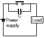

Building Automation
Industrial Automation
Power Automation & Safety


Bangladesh Distributor
Refer to the Safety Precautions for individual Counters for precautions specific to each Counter.
The following Counters contain lithium batteries that are not explosion proof.
1.Counters with Built-in Batteries: H7E[]-N
The Counter contains a lithium battery, which may occasionally ignite or rupture. Do not disassemble, deform under pressure, heat to 100°C or higher, or incinerate the Counter.
2.Counters with Replacement Batteries: Y92S-36 (for H7E[]-N)
The battery may occasionally rupture, ignite, or leak fluid. Do not short the positive and negative terminals. Do not charge, disassemble, deform under pressure, or throw the battery into a fire. If a non-specified battery is used, the battery may leak fluid or rupture, occasionally resulting in equipment failure or minor injury. Use only the specified battery.
The following Counters contain lithium batteries that are explosion proof.
Counters with Built-in Batteries: H7AN-[][][]M and H8BM-R
The Counter contains a lithium battery, which may occasionally ignite or rupture. Do not disassemble, deform under pressure, heat to 100°C or higher, or incinerate the Counter.
Precautions for Safe Use
Operating Environment
Use the Counter within the ratings specified for ambient operating temperature and ambient operating humidity for each model.
Store the Counter with the specified temperature range for each model. If the Counter has been stored at a temperature of less than −10°C, allow the Counter to stand at room temperature for at least 3 hours before using it.
Use the Counter within the performance specified for water and oil exposure for each model.
Do not use the Counter in locations subject to shock and vibration.
Long-term usage in such locations may damage the Counter due to stress.
Magnetic contactors generate a shock of 1,000 to 2,000 m/s2 when switching a load. When mounting to DIN Track, separate magnetic contactors from the Counter so that the Counter is not subjected to vibration and shock. Use anti-vibration rubber.
Do not use the Counter in locations subject to excessive dust, corrosive gases, or direct sunlight.
Do not use organic solvents (such as paint thinner or benzine), strong alkalis, or strong acids because they will damage the external finish of the Counter.
Separate the input devices, input wiring, and Counter as far as possible from sources of noise and power lines carrying noise.
When using the Counter in environments subject to large amounts of static electricity (e.g., pipes carrying molding materials, powders, or fluid materials), separate the Counter as far as possible from the sources of static electricity.
Do not remove the external case from the Counter.
Do not use the Counter in locations where condensation may occur due to high humidity or sudden temperature changes.
Condensation inside the Counter may result in malfunction or damage to Counter elements.
The life of internal parts may be reduced if Counters are mounted in close proximity to each other.
Resin and rubber parts (e.g., rubber packing) may deteriorate, shrink, or harden depending on the operating environment (e.g., subjected to corrosive gases, ultraviolet light, or high temperatures). We recommend periodic inspection and replacement.
Power Supply
Be sure that the voltage applied is within the specified range, otherwise the internal elements of the Counter may be damaged.
Install a switch or circuit breaker that allows the operator to immediately turn OFF the power, and label it to clearly indicate its function.
Maintain voltage fluctuations in the power supply within the specified range.
Use a commercial power supply for the power supply voltage input to models with AC inputs.
Inverters with an output frequency of 50/60 Hz are available, but the rise in the internal temperature of the Counter may result in ignition or burning. Do not use an inverter output for the power supply of the Counter.
Correctly Handling Input Signals
Malfunction due to noise may occur if input wiring is placed in the same duct or conduit as power lines or high-voltage lines.
Separate input wiring from power lines and wire them in a separate system.
Also, use shielded cables, use metal conduits, and keep wiring distances as short as possible.
These are basic requirements when using a high-speed electronic counter.
Counters with Relays
Do not connect a load that exceeds contact ratings, such as the switching capacity (contact voltage or contact current). Insulation faults, contact welding, contact faults, and other failures to achieve specified performance may occur and the relay may be damaged or may burn.
Continued use with deteriorated performance may ultimately result in insulation breakdown between circuits or relay burning. The life of the built-in relay is greatly affected by switching conditions.
Before using the Counter, test operation under actual application conditions and confirm that the switching frequency presents no problems in performance.
Electrical life depends on the type of load, switching frequency, and ambient environment. Observe the following precautions when using the Counter. If the phases are synced when switching an AC load or when switching a DC load, contact transfer may cause the contacts to stick or may cause contact failure. Confirm applicability and consider using a surge absorbing element. When switching at high frequencies, heat generated by arcing may cause contacts to melt or may cause metal corrosion. Consider connecting an arc absorbing element, reducing the switching frequency, or lowering the humidity.
The inrush current depends on the type of load, which also affects contact switching frequency and the number of operations. Check the rated current and the inrush current, and design the circuits with sufficient margin.
| Resistive load | Solenoid load | Motor load | Incandescent lamp load |
| Rated current | 10 to 20 times the rated current | 5 to 10 times the rated current | 10 to 20 times the rated current |
| Sodium light load | Capacitor load | Transformer load | Mercury light load |
| 1 to 3 times the rated load | 20 to 40 times the rated load | 5 to 15 times the rated load | 1 to 3 times the rated load |
Arcing when switching and relay heating may result in ignition or explosion. Do not use the Counter in atmospheres subject to inflammable or explosive gases.
Contact faults may occur. Do not use the Counter in atmospheres subject to sulfidizing gas, chloride gas, or silicon gas.
The switching capacity for DC voltage loads is lower than that for AC voltage loads.
Counters with Non-contact Outputs
Short faults or open faults may occur due to destruction of the output element. Do not use the Counter for a load that exceeds the rated output current.
Short faults or open faults may occur due to destruction of the output element from reverse electromotive force. When using the Counter for a DC inductive load, always connect a diode as a countermeasure against reverse electromotive force.
Other Precautions
Confirm that you have the correct model before using the Counter.
Be sure that all terminals are wired correctly.
Precautions for Correct Use
Input Connection
Consider the residual voltage of the input sensor and make sure that the input conditions of the Counter conform to the rated conditions.
Note:The residual voltage is the voltage between the output and 0-V lines when the transistor is ON (i.e., the total voltage between both edges of the transistor and diode bridge).
Connection Example with a Photoelectric Sensor:
E3NX-FA11
Connection Example with Proximity Sensor:
E2E-X[]E
*Constant current output is 1.5 to 3 mA.
Note:For Connector Models, the connection between pins 1, 4 and 3 uses an NO contact, and the connection between pins 1, 2 and 3 uses an NC contact.
Connection Example with Programmable Controller:
CJ1W-OD211
The Counter may not receive count inputs correctly when using an input waveform for with an inverter current.
Power Supply
Do not apply the supply voltage gradually, otherwise the Counter may go into time-up condition or may not be reset. Apply the supply voltage on the Counter through a switch or relay contact at one time.
The Counter requires 50 ms for stable operation after power is turned ON.
Input signals only after this 50-ms period has elapsed. For details, refer to the datasheets for individual Counters.
When applying the AC power supply, the two specified power supply terminals can be connected without regard to the polarity.
When applying the DC power supply, the power supply terminals must be connected with the correct polarity.
Be sure that the ripple rate of DC power supplied to the Counter is within the rated range.
The Counter can withstand an external impulse voltage with a ±(1.2 × 50)-μs standard waveform imposed between the power supply terminals, which conforms to the Japanese JEC-210 standard. If an impulse voltage that exceeds this may occur, use a surge absorber.
If power surges or noise exists, it may cause damage to internal elements or faulty operation. To prevent this, it is recommend that you check the waveform and use an appropriate surge absorber.
The effect of a surge absorber will depend on the surge or noise that is generated, so it must be checked under actual application conditions.
Make sure that no residual voltage or inductive voltage exists when the power is turned OFF.
Be sure that the capacity of the power supply is large enough, otherwise the Counter may not start due to inrush current that may flow for an instant when the Counter is turned ON. (Refer to Technical Explanation for Counters)
Control Output
Use a load current for the control output relay contacts that is below the rated applicable load. Otherwise the life of the relay contacts will be significantly shortened, or if transistors are used, the transistors may be damaged.
The life of control output relay contacts depends greatly on switching conditions. Before using the Counter, test operation under actual application conditions and confirm that the switching frequency presents no problems in performance. If contacts are used after their performance has degraded, they may eventually cause insufficient insulation between circuits or burning damage to the relay itself.
For micro-load switching, check the minimum applicable load that is given for each Counter.
Mounting
There are no particular restrictions on the surface mounting direction, but be sure that the Counter is securely mounted as horizontally as possible.
[Surface Mounting]
When aligning Counters vertically with P2CF Sockets, allow for the movable hooks and be sure that there is a 20-mm space above and below each Socket.
[Flush Mounting]
When the Y92F-30 Flush Mounting Adapter is used, insert the Counter into the square hole from the front side of the panel and attach the Flush Mounting Adapter from the rear side of the Counter. Press on the Flush Mounting Adapter so that the space between the Flush Mounting Adapter and the panel is reduced as much as possible, and secure the Flush Mounting Adapter with screws.
When multiple Counters are closely mounted vertically, be sure that the molded springs of each Y92F-30 Flush Mounting Adapter are located on the left and right sides.
When multiple Counters are closely mounted horizontally, be sure that the molded springs of each Y92F-30 Flush Mounting Adapter are located on the top and bottom sides.
Counters That Use Supplied Mounting Brackets (H8BM-R)
To mount the Counter, attach the two supplied brackets to the left and right sides of the Counter, and securely tighten the knurled screws on the brackets by your hand, keeping the Counter balanced on the right and left. The performance may not be satisfactory if the screws are loose or excessively tightened. If the knurled screws are excessively tightened with pliers or other tool, damage may result.
M 3×5 screws are used. Select solderless terminals referring to the figure below.
Provide enough space around the Counter when mounting it to ensure a proper working space.
Removing
To remove the Y92F-30 Flush-mounting Adaptor from the Counter, loosen the screw of the Y92F-30 and move both hooks upwards and downwards respectively.
Settings
When using a key switch for setting, do not use your fingernail or an instrument with a sharp point, otherwise the key may be damaged.
Others
When conducting a dielectric test, impulse voltage test, or insulation resistance test between an electric circuit and noncurrent-carrying metal parts of the Counter mounted to a control panel, be sure to take the following steps.
1. Separate the Counter from the circuits of the control panel.
(Either remove the Counter from the Socket or disconnect the wires.)
2. Short-circuit all terminals of the Counter. (These steps will prevent the internal circuits of the Counter from damage that may be caused if a machine on the control panel has an improper dielectric strength or insulation resistance.)
A Digital Counter constantly reads changes to the preset value.
(The H7AN-R[] Counter can also be set so that it will read changes in the preset value when it is reset.) The Counter will produce an output signal if the data input change causes a match with the Counter input. For reading the operating mode and other function settings, refer to the datasheets for individual Counters.
Do not tighten any terminal screw excessively.
Counter-electromotive voltage is generated by any inductive load that is turned on or off. If you use a Counter to switch an electromagnetic relay, connect a surge absorbing element to the Counter in order to prevent the Counter from malfunction and damage.
Examples of Surge Suppressor
| Circuit example | Applicability | Features and remarks | Element selection | ||
| AC | DC | ||||
| CR | * (OK) | OK | Load impedance must be much smaller than the CR impedance when the Relay operates on an AV Voltage. When the contact is open, the current flows through C and R to the inductive load. | Use the following as guides for C and R values: C: 0.5 to 1 μF for a 1-A contact current R: 0.5 to 1 Ω for 1-V contact voltage However, these values may depend on numerous factors, including the type of load and variations in characteristics. Confirm optimum values experimentally. Remember that capacitor C suppresses the discharge when the contacts are opened, while the resistor R limits the current applied when the contacts are closed the next time. Generally, use a capacitor with a dielectric strength of 200 to 300 V. When it is to be used in an AC circuit, use an AC capacitor (with no polarity). However, if there is any question about the ability to extinguish the arcing of the contacts when it is to be used in a high DC voltage, it may be more effective to connect the capacitor and resistor across the contacts, rather than across the load. Perform testing with the actual equipment to determine this. | |
| OK | OK | The release time of the contacts will be longer when a relay or solenoid is used as the load. | |||
| Diode | NG | OK | The energy stored in a coil (inductive load) reaches the coil as current via the diode connected in parallel with the coil, and it is consumed as joule heat by the resistance of the inductive load. This type of circuit lengthens the release time more than the CR type. | Use a diode having a reverse breakdown voltage of more than 10 times the circuit voltage, and a forward current rating greater than the load current. A diode having a reverse breakdown voltage two or three times that of the supply voltage can be used in an electronic circuit where the circuit voltage is not particularly high. | |
| Diode + Zener diode | NG | OK | This circuit effectively shortens release time in applications where the release time of a diode protection circuit is too slow. | The breakdown voltage to the Zener diode should be about the same as the supply voltage. | |
| Varistor | OK | OK | This circuit prevents a high voltage from being applied across the contacts by using the constant-voltage characteristic of a varistor. This circuit also somewhat lengthens the release time. This circuit is effective if connected across the load when the supply voltage is 24 to 48 V. If the supply voltage is 100 to 240 V, connect the circuit across the contacts. | The cutoff voltage Vc must satisfy the following conditions. For AC, it must be multiplied by √2. Vc > (Supply voltage × 1.5) However, if Vc is set too high, its effectiveness will be reduced because it will fail to cut off high voltages. | |
Do not use the following types of surge suppressors
 | This circuit arrangement is very effective for diminishing arcing at the contacts when breaking the circuit. However, electrical energy is stored in C (capacitor) when the contacts are open, so the current from C flows into the contacts when they close. This may lead to contact welding. | This circuit arrangement is very useful for diminishing arcing at the contacts when breaking the circuit. However, the charging current to C flows into the contacts when they are closed, so contact welding may occur. |
Although it is considered that switching a DC inductive load is more difficult than a resistive load, an appropriate surge suppressor can achieve almost the same characteristics.
The inrush current depends on the type of load, and may affect contact switching frequency, the number of operations,etc. It is recommend that you check the rated current and the inrush current, and design the circuits with sufficient margin for variation in these current values.
Disconnect the wiring before replacing the battery. Touching parts to which a high voltage is applied may result in electric shock.
Troubleshooting Counter Problems
The following application methods may result in errors. Implement suitable countermeasures.
1.The following may result if a large inductive load, such as a high-capacity motor or solenoid, share the power supply line connected to the Counter or is present near the Counter.
The Counter may count up or down without any input signal.
The power supply circuit of the Counter may be damaged. To prevent this, keep the motor or solenoid away from the Counter or connect a noise filter to the power supply circuit.
2.The following may result if a device with contacts that generate arcs shares the power line connected to the Counter or is near the Counter.
The Counter may count up or down without any input signal. To prevent this, connect an arc suppressor to the device.
3.The following may result if the input device has a relay without highly reliable contacts.
The Counter may not count up or down when the contacts are activated.
To prevent this, replace the relay with one that has highly reliable contacts.
4.The following may result if the input signal line is excessively long.
The power line connected to the Counter may cause the Counter to count up or down.
To prevent this, refer to Correctly Handling Input Signals.
The residual voltage may cause the input signal to remain active, so the Counter may not count up.
To prevent this, make the input signal line as short as possible and insert a 0.01 to 0.1-μF capacitor into the signal line close to the signal input terminal of the Counter.
5.The following may result if the power line is close to a high-tension line.
The high-tension line may cause the Counter to count up or down.
To prevent this, refer to Correctly Handling Input Signals.
6.The following may result if the supply voltage is imposed gradually.
The Counter may not operate normally or the Counter displays an inaccurate value even if a voltage is applied.
To prevent this, apply the supply voltage on the Counter through contacts at one time.
7.The following may result if the Counter is used for a long time in a place with excessive dust, direct sunlight, sprayed water, or sprayed oil.
The Counter may not count up properly or it may not operate normally after it has been used for an extended period of time.
The case of the Counter may become deformed.
To prevent this, protect the Counter from water, oil, dust, and sunlight. A hard front cover will protect the Counter from dust and drops of water.
8.The following may result if the Counter is used in a place excessively or continuously subjected to vibration or shock.

Contact separation may cause sequencing errors.
The internal and structural parts of the Counter may malfunction due to the stress.
To prevent this, reduce the vibration by placing a rubber cushion under the vibration source. Do not mount the Counter directly to the vibration source.
9.The following may result if the Counter is in high-speed counting operation with relay input signals.
The Counter may count more than the actual number of input signals.
To prevent this, set the counting speed to 30 Hz (cps).
10.If the input device (e.g., proximity or photoelectric sensor) is turned ON or OFF while power supply voltage is being applied on the Counter, excessive pulses may be generated from the input device and input to the Counter.
11.If the count input is a transistor input at a speed of less than 30 Hz (cps), setting the maximum counting speed to 30 Hz (cps) will improve the noise immunity of the Counter.
12.The Counter can be reset with a reset signal, which must be 20 ms long minimum, from the relay or transistor regardless of the maximum counting speed or input method of the Counter.
*1.The reset signal with distored waves or contact bouncing, resetting is possible as long as the reset signal is stable for at least 20 ms.
*2.CP1 and CP2 can be input if it passes 50 ms after the reset signal input is completed.
13.The maximum counting speed is the response speed of the Counter when signals with the minimum permissible signal width are input at an ON-to-OFF ratio of 1:1.
If the ratio is not 1:1, the minimum permissible signal width must be longer than the specified values for both the ON width and OFF width. The response will therefore be slower.
If the width of each signal or interval between adjacent signals is less than the minimum permissible signal width, the Counter will not respond even for an input signal that is less than the maximum counting speed.
14.If the transistor input signal is not a square-wave signal (e.g., if it is a sine-wave, triangular-pulse, or saw-tooth-pulse signal), all the ON and OFF widths or H- and L-level periods must be at least as long as the minimum permissible signal width.